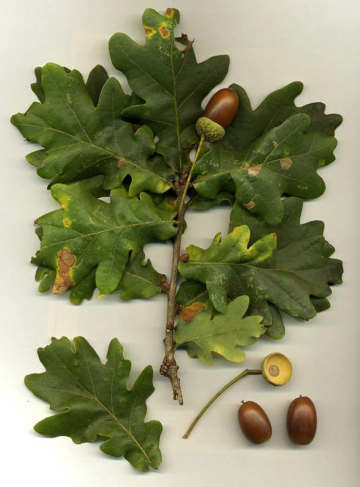
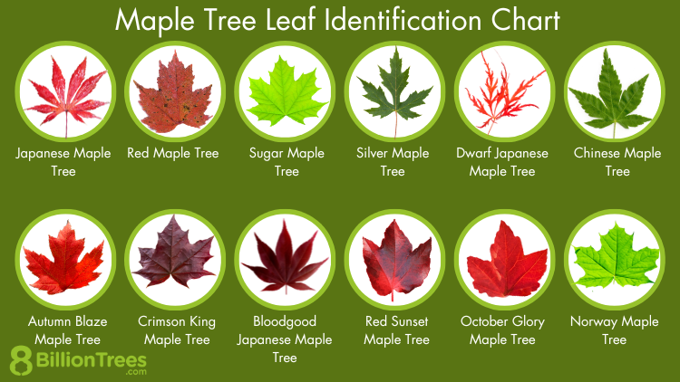
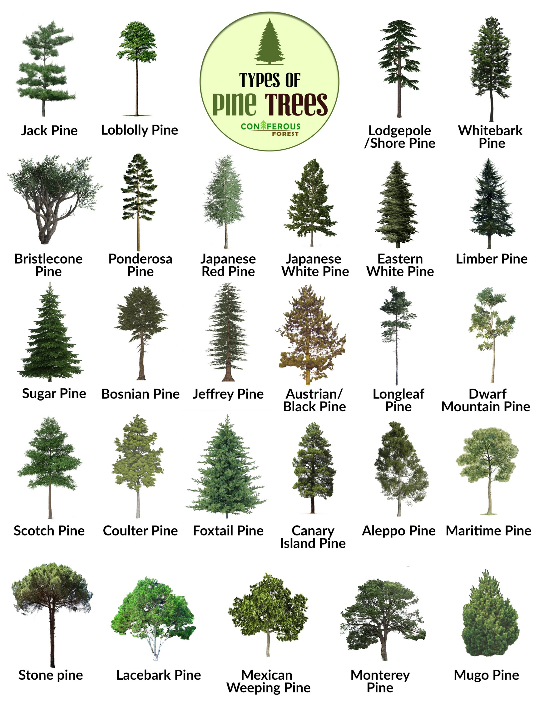
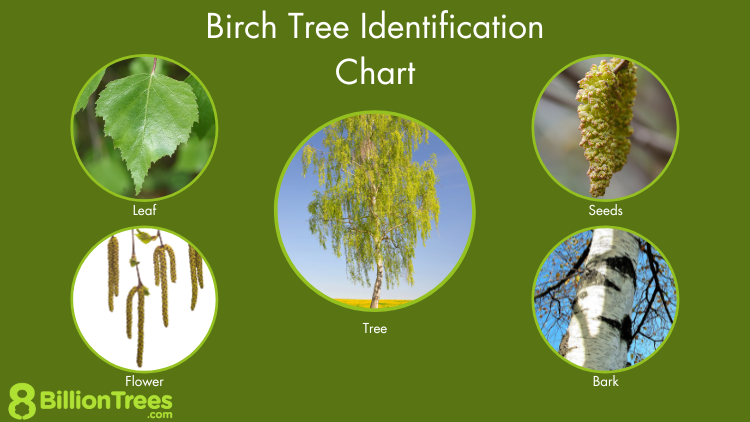
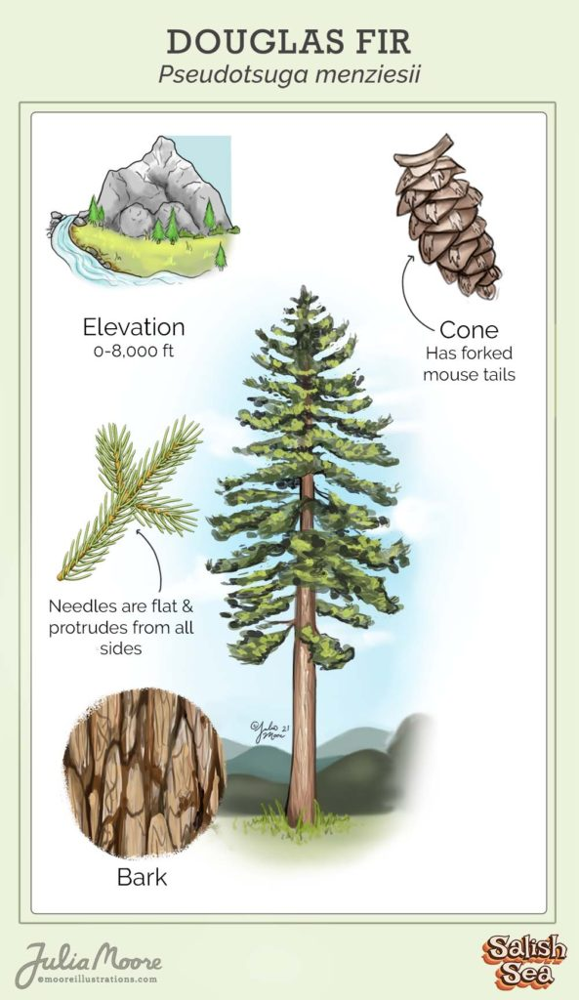
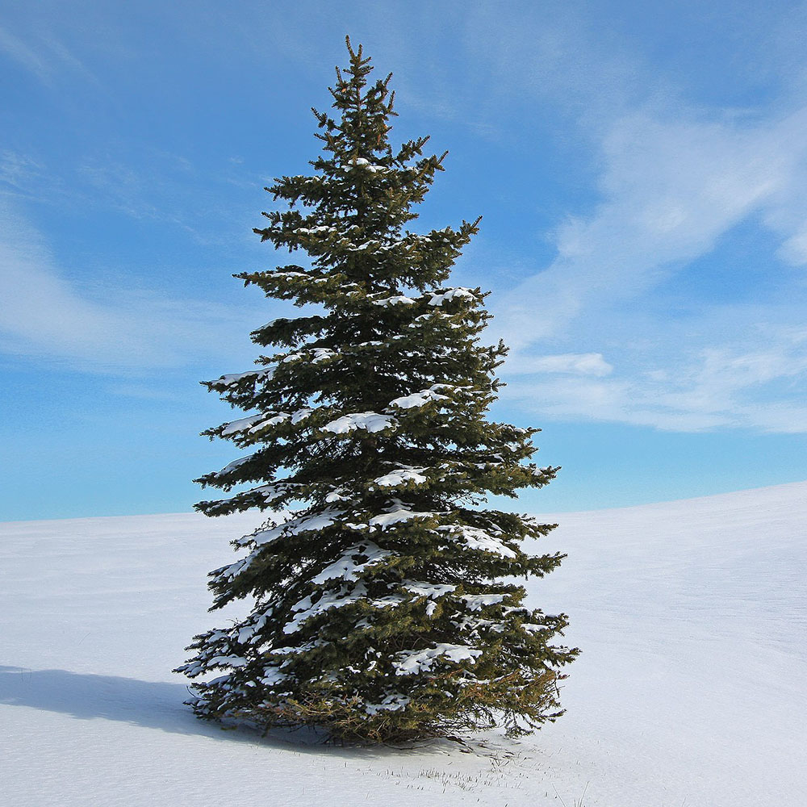
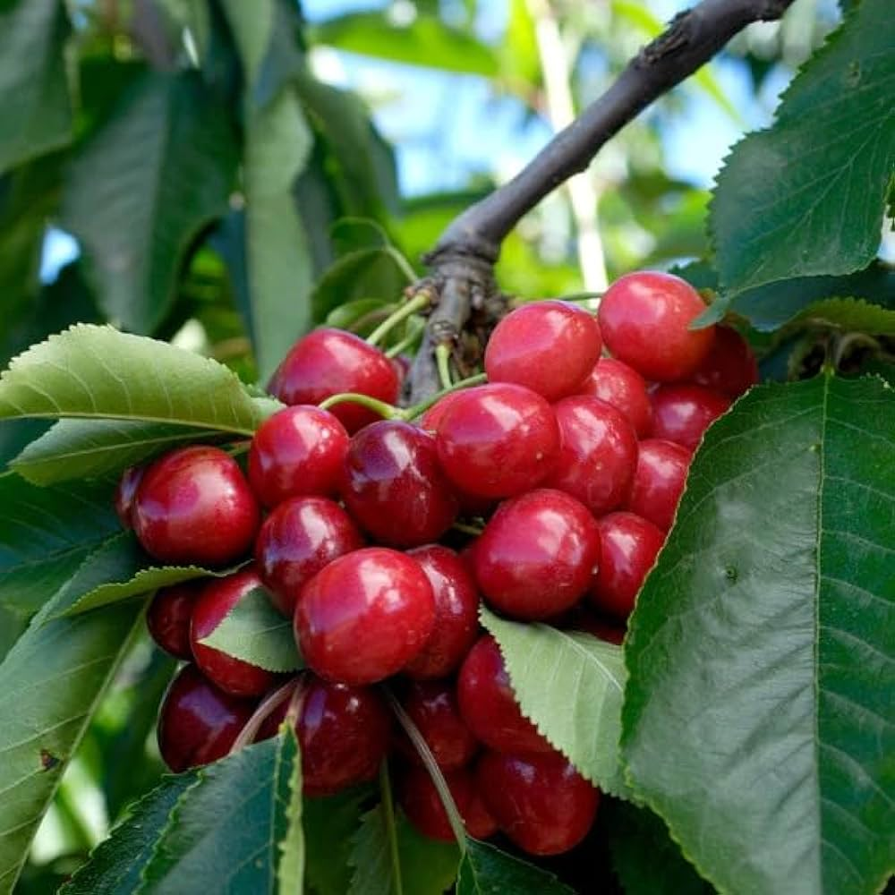
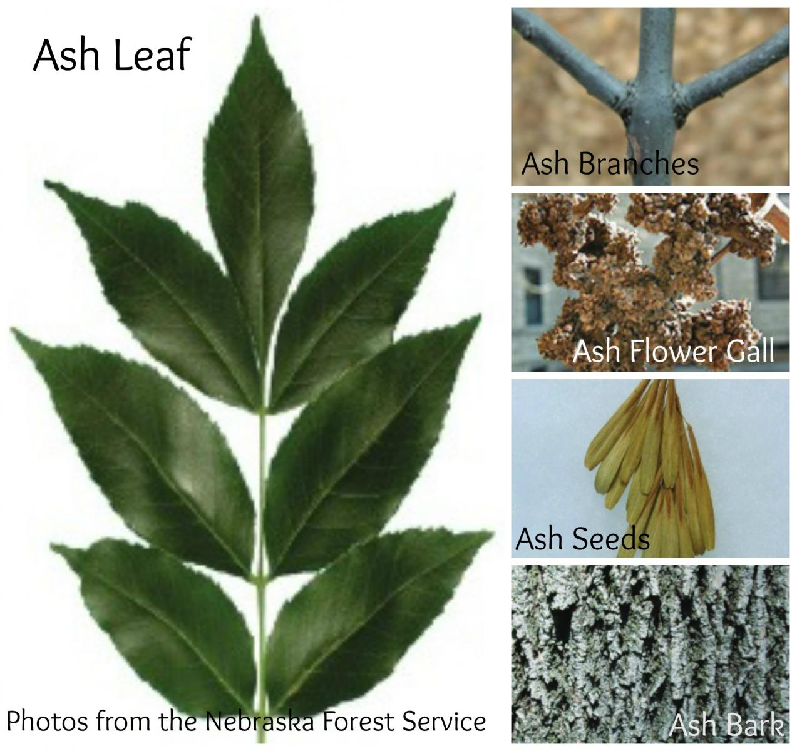
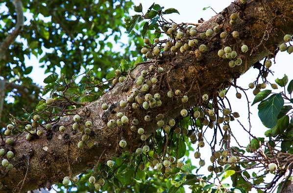
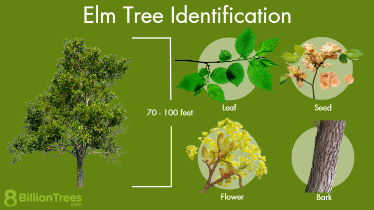

Oak Tree
- Height: 60-100 feet
- Canopy Spread: 50-80 feet
- Oxygen Production: Approximately 260 pounds per year

Maple Tree
- Height: 40-60 feet
- Canopy Spread: 25-45 feet
- Oxygen Production: Approximately 230 pounds per year

Pine Tree
- Height: 50-80 feet
- Canopy Spread: 20-40 feet
- Oxygen Production: Approximately 100 pounds per year

Birch Tree
- Height: 40-70 feet
- Canopy Spread: 35-50 feet
- Oxygen Production: Approximately 180 pounds per year

Douglas Fir
- Height: 70-250 feet
- Canopy Spread: 20-40 feet
- Oxygen Production: Approximately 80 pounds per year

Spruce Tree
- Height: 60-200 feet
- Canopy Spread: 20-30 feet
- Oxygen Production: Approximately 140 pounds per year

Cherry Tree
- Height: 20-30 feet
- Canopy Spread: 15-25 feet
- Oxygen Production: Approximately 140 pounds per year

Ash Tree
- Height: 50-80 feet
- Canopy Spread: 40-50 feet
- Oxygen Production: Approximately 220 pounds per year

Sycamore Tree
- Height: 75-100 feet
- Canopy Spread: 60-80 feet
- Oxygen Production: Approximately 260 pounds per year

Elm Tree
- Height: 60-80 feet
- Canopy Spread: 40-60 feet
- Oxygen Production: Approximately 200 pounds per year